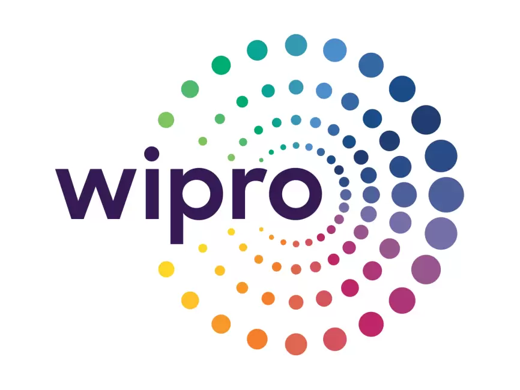

Senior Software Engineer
GlobalLogic, Bangalore
August 2024 – Present
- Worked on SOE project as part of the Ops team, resolving production issues and reducing manual intervention by developing automation jobs and implementing change solutions based on customer requirements.
- Working on a new POC project- AIOps to automate step-by-step issue resolution commenting in the respectiv Jira ticket, triggered via Jira Webhook, by leveraging Prompt Engineering on a custom-built LLM model with backend powered by AWS Bedrock, AWS Lambda-boto3, and API Gateway.
- Built a SlackBot from scratch to automate Confluence runbook link referencing by replying to user queries or issues in Slack channels, integrating LLM models, boto3, and AWS services to enhance team productivity and reduce manual effort.
- Worked on EKS upgrades across multiple environments and developed a POC for CMDB automation using Cartography and Python as a solo contributor.

Software Engineer/ DevOps Engineer
Wipro Technologies, Bangalore
October 2021 – August 2024
- Designed and managed containerized deployments using Docker , Kubernetes and Terraform enhancing scalability and reducing deployment time by 45% to 65%.
- Built and maintained CI/CD pipelines with Jenkins; resolved infrastructure issues across EC2· EKS· ECS· IAM· VPC· LB to ensure high availability and performance.
- Key Achievement: Honored with the Intel Star Award (Aug 2023) as a Star Performer for outstanding contributions and achievements.
AWS DevOps Engineer (Part-time Freelancer)
Remote, Kolkata
May 2020 - August 2021
- Gained extensive experience with various AWS services, designing and managing containerized applications with Docker and Kubernetes for enhanced scalability.
- Utilized Terraform for declarative AWS resource provisioning, contributing to streamlined, version-controlled, and repeatable infrastructure automation.
- Provided cloud infrastructure support and automation solutions for various small-scale projects.